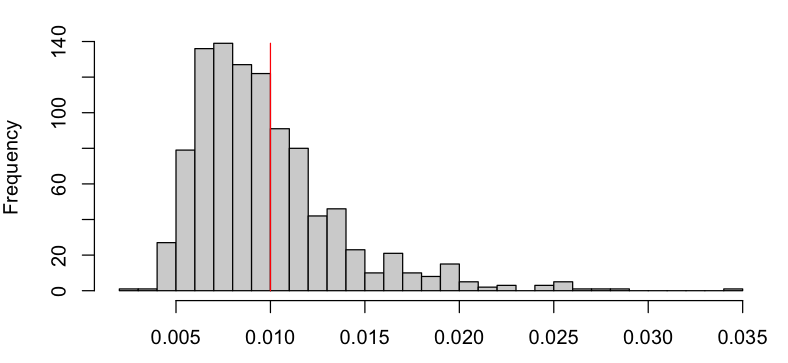
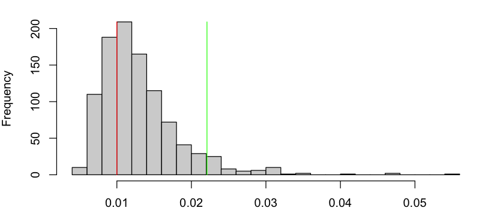

5. Tema 4: Tests d’hipòtesis¶
5.1. Raó de Versemblances i Neyman-Pearson¶
5.1.1. Exemple de motivació¶
Començarem considerant un dels exemples que vam veure al Tema 2:
Tenim un circuit integrat per K components en sèrie
El fabricant dels components ens assegura que cada component té una proba diària de fallar \(\rho_X < 0.01\)
Durant els nostres experiments de control de qualitat, observem que el circuit falla després de 57, 49, 8, 234, 4, 181, 153,22, 91, 11 dies.
Està respectant el fabricant de components la garantia?
Al Tema 2, vem aprendre que \(Y\), el temps de vida del circuit, seguia una distribució geomètrica amb paràmetre \(\rho_Y = 1 - (1-\rho_X)^K\), i vem derivar-ne l’EMV:
Apartir d’això vam estimar:
i vam concloure que el fabricant estava respectant la garantia, ja que \(\hat{\rho}_X \ll 0.01\).
Però què decidirieu si ens hagués sortit \(\hat{\rho}_X \approx 0.01\)? O \(\hat{\rho}_X \approx 0.008\)?
De la teoria del Tema 2, sabem que l’EMV \(\hat{\rho}_Y\) és una quantitat aleatòria, i per tant \(\hat{\rho}_X\) també. Per exemple, vegem la distribució de \(\hat{\rho}_X\) quan \(\rho_X=0.008\):
{kind=link}
Quan \(\rho_X = 0.008\), \(P(\hat{\rho}_X > 0.01; \rho_X = 0.008) \approx 37\%\)! Si \(\rho_X = 0.0001\), aquesta probabilitat és més petita, però no és nula. Això és degut a l’error d’estimació (l’EMV és consistent asimptòticament, però estem treballant amb mostres finites!). Això s’anomena un Fals Positiu.
Per altra banda, suposem que \(\rho_X = 0.02\) (2x més gran que 1%). Degut a l’aleatorietat de \(\hat{\rho}_X\), també tindrem una probabilitat no nula de que \(\hat{\rho}_X < 0.01\):
{kind=link}
Decidir que, en base a les observacions, \(\rho_X < 0.01\) quan en realitat \(\rho_X > 0.01\) s’anomena un Fals Negatiu.
Malgrat aquestes dues observacions, la intuició ens diu que si \(\hat{\rho}_X\) és molt més petit que \(\rho_c = 0.01\), o de manera equivalent, \(T := \hat{\rho}_X - \rho_c\) és prou petit, hauriem de poder afirmar que \(\rho_X\) és efectivament més petit que 0.01 i per tant el fabricant està complint la garantia.
Ja podem definir alguns conceptes claus:
\(T\) s’anomena l’estadístic del test, que calculem a partir de la mostra (en aquest exemple depèn de \(\hat{\rho}_X\))
El valor \(T_0\) contra el que comparem \(T\) per tal de prendre una decisió, s’anomena valor crític.
En el nostre exemple, el conjunt \(T \leq T_0\) és la regió d’acceptació del test, el complementari n’és la regió crítica.
Quan escollim \(T_0\), determinem implícitament la quantitat de Falsos Positius i Falsos Negatius que tindrem. En aquest exemple, quan més gran \(T_0\), menys “estricte” és el nostre criteri, i per tant més Falsos Positius i menys Falsos Negatius. Quan més petit, a l’inversa.
5.1.2. El paradigma de Neyman-Pearson i Fisher¶
La intuició que estem fent servir sembla raonable però ens falta una manera quantitativa d’escollir quan \(T\) és “prou petit” o no (és a dir, escollir el valor crític \(T_0\).) El paradigma que utilitzarem ens permetrà fer això. Però primer haurem de definir una sèrie de conceptes:
L’Hipòtesis Nula (\(H_0\)): És l’hipòtesi sobre el model estadístic que volem contrastar/refutar
L’Hipòtesis Alternativa (\(H_1\)): És l’alternativa de l’hipòtesi nula (no necessàriament complementària!)
L’Error de Tipus I o Fals Positiu: Quan el nostre test refusa \(H_0\) quan aquesta és certa
L’Error de Tipus II o Fals Negatiu: Quan el nostre test accepta \(H_0\) quan \(H_1\) és certa
\(\alpha = P(\mbox{refusar } H_0 ; H_0)\): el nivell de significació o probabilitat d’Error de Tipus I
\(\beta = P(\mbox{acceptar } H_0 ; H_1)\): la probabilitat d’Error de Tipus II
La potència del test (power): \(1 - \beta\), la probabilitat \(P(\mbox{refusar } H_0 ; H_1)\).
Per tant, per especificar un test i caracteritzar-lo, necessitarem especificar \(H_0\), \(H_1\), i la regió crítica…
Fixeu-vos que, intuitivament, hi ha una tensió entre \(\alpha\) i \(1- \beta\).
En teoria, el test ideal és el que té \(\alpha=0\) i \(1 - \beta = 1\), és a dir no fa cap fals positiu ni cap fals negatiu.
A la pràctica el test ideal no existeix, i ens conformarem amb els tests que, donat \(\alpha\), tenen millor potència.
\(H_0\): \(\rho_X - \rho_c \leq 0\), és a dir el fabricant ens diu la veritat (recordeu \(\rho_c:=0.01\))
\(H_1\): \(\rho_X - \rho_c > 0\), és a dir el fabricant ens ha mentit
La regió crítica: \(T > T_0\) on rebutjem \(H_0\)
L’Error de Tipus I: L’estadístic ens dona \(T > T_0\) però \(\rho_X \leq 0.01\).
L’Error de Tipus II: L’estadístic ens dona \(T \leq T_0\) però \(\rho_X > 0.01\).
Normalment primer escollirem un nivell de significació \(\alpha\), i a partir del mateix escollirem \(T_0\) de manera que:
Això determinarà implícitament la potència del test \(1 - \beta = P(T > T_0 ; H_1)\).
Fixeu-vos que hi ha una “asimetria” entre \(H_0\) i \(H_1\), i que les escull el practicant…
Per trobar el valor crític amb una significació de \(\alpha=0.05\), simularem \(Y \sim \mbox{Geomètrica}(1 - (1-\rho_X)^K)\) amb \(\rho_X=0.01\), i buscarem \(T_0\) tal que \(P(T > T_0 ; H_0) = \alpha = 0.05\):
{kind=link}
Fixeu-vos que per tenir una significació de \(\alpha=0.05\), només podrem rebutjar l’hipòtesi Nula si \(\hat{\rho}_x > 0.022\)! (això és en part perquè en el nostre exemple N=10, i degut això la variança del nostre estimador és gran).
Considereu els tests PCR que es fan per detectar la COVID-19.
Quina seria \(H_0\)? I \(H_1\)?
Què és un fals positiu? I un fals negatiu?
Què és pitjor, un fals positiu? o un fals negatiu?
Quin és l’estadístic del test?
Quina creieu que és la regió crítica del test?
Què creieu que vol dir que els tests PCR tenen “alta sensibilitat”?
5.1.3. Test de Raó de Versemblances (RV)¶
El paradigma que hem explicat fins ara ens guia per escollir el valor crític \(T_0\) quan ja tenim un estadístic de test \(T\) ( a l’exemple, \(T = \hat{\rho}_X - 0.01\)) sobre el que treballar, i una idea sobre quina hauria de ser la regió crítica (a l’exemple \(T > T_0\)).
El següent Lemma estableix com construïr tests òptims per hipòtesis simples, és a dir hipòtesis definides a partir del paràmetre \(\theta\) d’una població caracteritzada per una f.d.p o f.m.p \(f_X(x;\theta)\):
\(H_0: \theta = \theta_0\)
\(H_1: \theta = \theta_1\)
Lema 4.1 (de Neyman-Pearson, 1933): Per una mostra \(X_1, \cdots, X_N\) i \(H_0\) i \(H_1\) hipòtesis simples, el test basat en l’estadístic de raó de versemblances \(T = \frac{f(X_1, \cdots, X_N; \theta_0)}{f(X_1, \cdots, X_N; \theta_1)}\) amb regió crítica \(T \leq T_0\) i significació \(\alpha\), és el test amb més potència amb nivell de significació \(\alpha\).
Fixeu-vos que la versemblança d’una mostra:
és més gran quan més versemblant és que la mostra \(X_1, \cdots, X_N\) hagi estat generada per el paràmetre \(\theta\). (Aquest és el mateix principi que vam fer servir per justificar el Mètode de Màxima Versemblança per estimar \(\theta\) a partir de \(X_1, \cdots, X_N\)).
Per tant, si l’evaluem a dos valors diferents de \(\theta\), \(\theta_0\) i \(\theta_1\), \(f_X(X_1, \cdots, X_N; \theta)\) hauria de ser més gran per aquell valor que és més versemblant segons les dades. En conseqüència, l’estadístic
serà gran quan \(\theta_0\) és més versemblant que \(\theta_1\) i petita en el cas contrari. Això justifica que refusem l’hipòtesi nula \(\theta=\theta_0\) quan \(T \leq T_0\) per algun \(T_0\) a escollir.
5.1.4. Exemple d’aplicació: detecció per infra-rojos¶
Considereu una mostra iid \(X_1, \cdots, X_N\) normal i de variança coneguda \(\sigma^2\), obtinguda a partir de les mesures d’un sensor de detecció d’infra-rojos. Quan davant del sensor hi ha un objecte, es mesura una senyal amb mitja \(\mu_1\), quan no, amb \(\mu_0\).
\(H_0\): no hi ha cap objecte, \(\mu = \mu_0\)
\(H_1\): n’hi ha un, \(\mu = \mu_1\)
{kind=link}
Com que es tracta d’hipòtesis simples, segons el Lema 4.1 de Neyman-Pearson és òptim fer servir el test de raó de versemblances. L’estadístic és:
Fixeu-vos doncs que \(T\) depèn únicament de la mostra a través de \(\bar{X}\). Per exemple, si \(\mu_0 > \mu_1\), \(T\) és petit si \(\bar{X}\) és petit, per tant rebutjarem \(H_0\) si \(\bar{X}\) és petita. Per tant, per aquest test, enlloc de fer servir \(T\) com estadístic, podem fer servir directament \(\bar{X}\)!
Ens queda només trobar el valor crític \(T_0\) tal que \(P(T \leq T_0; \mu_0) = \alpha\).
Com hem vist, \(T\) només depèn de la mostra a través d’una funció monotònica d’ \(\bar{X}\), per tant la regió crítica es pot expressar en funció d’\(\bar{X}\):
per \(X_0 = \frac{1}{2\left(\mu_0 - \mu_1\right)}\left(\frac{2 \sigma^2\log(T_0)}{N} + \mu_0^2 - \mu_1^2 \right)\).
Es a dir, enlloc de buscar \(T_0\) tal que \(P(T \leq T_0; \mu_0) = \alpha\), buscarem directament \(X_0\) tal que \(P(\bar{X} \leq X_0; \mu_0) = \alpha\).
Per continuar, fixem-nos que sota \(H_0\), \(X_1, \cdots, X_N \sim \mathcal{N}(\mu_0, \sigma^2)\) per tant [Diapo 29, Tema 2]:
Podem doncs trobar \(X_0\) manipulant l’expressió de significació:
on tenim que \(\frac{\bar{X} - \mu_0}{\sqrt{\frac{\sigma^2}{N}}} \sim \mathcal{N}(0, 1)\).
Així doncs, només caldrà trobar \(X_0\) tal que:
on \(\phi(x)\) és la f.d.c. inversa d’una normal estàndard. Finalment:
i per tant (en el cas on \(\mu_0 > \mu_1\)) rebutjarem l’hipòtesi nula quan \(\bar{X} \leq \mu_0 + \sqrt{\frac{\sigma^2}{N}}\phi\left(\alpha\right)\)
Exercici: Quin valor crític \(X_0\) i regió crítica tindriem si enlloc de \(\mu_0 > \mu_1\) tenim que \(\mu_0 \leq \mu_1\)?
5.2. Test de Raó de Versemblances Generalitzada (RVG)¶
5.2.1. Test de Raó de Versemblances Generalitzada (RVG)¶
El test de Raó de Versemblances té propietats teòriques interessants (Lema 4.1.) però és d’aplicació pràctica limitada, ja que sovint les nostres hipòtesis seràn compostes, és a dir, del tipus:
\(H_0: \theta \in \Theta_0\)
\(H_1: \theta \in \Theta_1\)
on \(\Theta_0\) i \(\Theta_1\) són subconjunts de \(\Theta\) i per tant el test de Raó de Versemblances no és aplicable.
Per exemple, el nostre exemple inicial es tractava d’hipòtesis compostes:
\(\Theta_0 = \left\{\rho_X \leq 0.01 \right\}\)
\(\Theta_1 = \left\{\rho_X > 0.01 \right\}\)
Donada una mostra \(X_1, \cdots, X_N\) d’una població amb f.d.p. \(f_X\), i versemblança \(f(X_1, \cdots, X_N; \theta)\), el Test de Raó de Versemblances Generalitzat, es basa en el següent estadístic:
(fixeu-vos que al denominador el max és respecte \(\Theta\) no \(\Theta_1\) amb regió crítica:
i \(\lambda_0\) tal que \(P(\Lambda \in \lambda_0; \theta_0) = \alpha, \forall \theta_0 \in \Theta_0\).
Per evaluar l’estadístic del test d’RVG, cal doncs trobar l’EMV sota cada una de les hipòtesis
5.2.2. Exemple d’aplicació: test sobre la mitja d’una Gaussiana amb variança coneguda¶
Considereu una mostra iid \(X_1, \cdots, X_N\) normal i de variança coneguda \(\sigma^2\).
Volem testejar si la mitja de la població és un valor donat \(\mu_0\) o no. Les hipòtesis son doncs:
\(H_0: \mu= \mu_0\) (simple)
\(H_1: \mu \neq \mu_0\) (composta)
Podeu pensar en una situació pràctica on voldriem testejar aquesta hipòtesi?
Com que l’hipòtesis nula és simple, en aquest exemple, l’estadístic del test RVG és:
Per tant haurem de trobar l’EMV (\(\max_{\theta \in \Theta} f(X_1, \cdots, X_N; \theta)\)) per calcular-lo. Però al tractar-se d’una mostra normal, ja sabem que l’EMV de la mitja \(\mu\) és simplement la mitjana aritmètica de la mostra:
\(\hat{\mu} = \bar{X}\)
Per tant en aquest exemple l’estadístic es simplifica a:
on \(f_X\) és la f.d.p d’una Gaussiana.
Al numerador tindrem
\(\frac{1}{\left(\sqrt{2\pi\sigma^2}\right)^N}\exp\left(-\frac{1}{2\sigma^2}\sum_i(X_i - \mu_0)^2 \right)\)
i al denominador
\(\frac{1}{\left(\sqrt{2\pi\sigma^2}\right)^N}\exp\left(-\frac{1}{2\sigma^2}\sum_i(X_i - \bar{X})^2 \right)\)
Per tant, trobarem:
Amb una mica d’àlgebra, això es pot simplicar a
per tant la regió crítica serà:
arribem a:
Per \(X_0=\sqrt{- 2 \log \lambda_0 }\). És a dir, rebutjarem \(H_0\) quan la diferència entre \(\bar{X}\) i \(\mu_0\) sigui prou gran, relativa a la variança de \(\bar{X}\).
De nou, com que la mostra es Gaussiana, \(\frac{\bar{X} - \mu_0}{\sqrt{\frac{\sigma^2}{N}}} \sim \mathcal{N}(0, 1)\), podem buscar el valor crític \(X_0\) com segueix:
que és el mateix que:
on \(F_Z\) és la f.d.c. d’una normal estàndard. Com que \(F_Z(x) = 1 - F_Z(-x)\), concluïm que el valor crític serà tal que \(X_0\):
i per tant rebutjarem \(H_0\) quan:
5.2.3. Exemple d’aplicació: test sobre la mitja d’una Gaussiana amb variança desconeguda¶
En aquesta curs no ho desenvoluparem, però el que hem fet es pot generalitzar a una situació on volem testejar si la mitja d’una població Gaussiana és igual a un valor donat \(\mu_0\) o no:
\(H_0: \mu= \mu_0\) (simple)
\(H_1: \mu \neq \mu_0\) (composta)
però la variança de la mateixa és desconeguda. En aquest cas, el Test de RVG, dona lloc a l’estadístic:
Sota l’hipòtesi nula, \(\bar{X} \sim \mathcal{N}(\mu_0, \sigma^2)\) i \(\frac{N-1}{\sigma^2}S_X^2 \sim \chi^2_{N-1}\) (Casella & Berger 5.3.1), i com vam aprendre a la Pràctica 2 del Tema 2, aleshores T segueix una distribució t de Student amb \(N-1\) graus de llibertat. La regió crítica es pot doncs calcular a partir de la f.d.c. inversa de la distribució t de Student.
5.2.4. Distribució asimptòtica de la log-raó de versemblances sota \(H_0\)¶
Als exemples anteriors, hem construït les regions crítiques a base de manipular la regió crítica del Test de RVG:
fins que trobàvem un conjunt equivalent, expressant en funció d’un estadístic diferent de \(\Lambda\), que anomenem \(T\):
de manera que:
Això ho feiem perquè sovint podiem caracteritzar la f.d.p de \(T\) sota la hipòtesi nula, ja que trobar la de \(\Lambda\) semblava massa difícil.
Resulta que hi ha un resultat teòric molt important que amplia l’aplicació del test de RVG a moltes més situacions, sempre i quant la talla de la mostra sigui suficientment gran:
Teorema 4.1.: Sota certes condicions de regularitat de les f.d.p. involucrades, la distribució de \(-2\log\Lambda\) sota l’hipòtesis nula tendeix a una distribució de \(\chi^2_D\) amb \(D = \mbox{dim}\Theta - \mbox{dim}\Theta_0\) quan la talla de la mostra tendeix a l’infinit.
En les pròximes seccions veurem una aplicació pràctica d’aquest resultat en el contexte de tests per la Bondat d’Ajust.
5.3. Aplicació del TRVG: Bondat d’Ajust¶
5.3.1. Tests de Bondat d’Ajust¶
Recordeu del Tema 3 que un dels problemes que vam “esquivar” a l’ajustar lleis de probabilitat a les dades era el de determinar si la nostra hipòtesi sobre la família que generava les dades era adequada o no:
{kind=link}
De les tres famílies (Gaussiana, Poisson, Gamma), quina té millor ajust?
Intuitivament, si tenim dades discretes, sembla que el millor ajust seria el que minimitzaria les diferències entre les comptes observades (histograma) i les comptes que “esperaria” la f.d.p:
Necessitem un criteri més objectiu per determinar què és poca o molta diferència entre el que espera el model i el que observem.
En el material que segueix, donarem dues alternatives per quantificar la bondat d’ajust, és a dir: donada una mostra i un ajust d’una f.d.p a les mateixes, com n’és de probable que les dades fóssin generades pel model estocàstic que hem ajustat.
Suposem que tenim una mostra de talla N d’una v.a. discreta no-negativa amb f.m.p. \(X \sim p_X(x;\theta)\)
Construïm l’histograma de la mostra, amb M “compartiments” \(\left\{1, 2, \cdots, M\right\}\)
El nombre d’elements en cada compartiment, \(Y_1, \cdots, Y_M\) seguirà una distribució multinomial amb paràmetres \([p_X(0;\theta), p_X(1;\theta), \cdots, p_X(M-1;\theta)]\)
Aleshores, la versemblança de \(Y_1, \cdots, Y_M\) sota el model \(p_X(x;\theta)\) és:
En canvi, si no tenim cap hipòtesi sobre el model generador de \(X\), la versemblança de \(Y_1, \cdots, Y_M\) és:
on fixeu-vos que \(p_i, i=1,\cdots,M\) són “lliures”, és a dir \(p_i \neq p_X(i;\theta)\).
Tenim per tant dues hipòtesis:
\(H_0\): \(Y_1, \cdots, Y_M \sim \mbox{Multinomial}\left(p_X(0;\theta), p_X(1;\theta), \cdots, p_X(M-1;\theta), N\right)\)
\(H_1\): \(Y_1, \cdots, Y_M \sim \mbox{Multinomial}\left(p_1, \cdots, p_M, N\right)\) amb \(\sum_i p_i =1\)
Es tracta d’una hipòtesis composta, i podem fer servir el test de RVG!
Recordem que el test de RVG demana el càlcul de:
on \(\mathcal{P} := \left\{p_1, \cdots, p_M: \sum_i p_i =1 \right\}\).
El màxim del numerador es troba per \(\theta\) igual a l’EMV de \(\theta\) donat \(X_1, \cdots, X_M\) (l’EMV “habitual”).
El màxim del denominador es troba com l’EMV de \(p_1, \cdots, p_M\) sense cap restricció (vist al Tema 3, Diapo 11):
Per tant el RVG es simplifica a:
Com que coneixem la distribució sota \(H_0\) de \(-2\log \Lambda\), aplicarem la transformació \(-2\log(\cdot)\) a l’expressió anterior:
Definint \(N p_X(i;\hat{\theta}) = \hat{y}_i\) i tenint en compte que \(N \hat{p}_i = y_i\), obtindrem:
Suposant que \(N\) és gran, invoquem el Teorema 4.1. amb \(\mbox{dim}\Theta = M-1\) i \(\mbox{dim}\Theta_0 = 1\), sabem que \(-2 \log\Lambda \sim \chi^2_{M-2}\) i podem refusar \(H_0\) quan
on \(\phi_{\chi^2_{M-2}}\) és la f.d.c. inversa d’una llei \(\chi^2_{M-2}\).
5.3.2. Test \(\chi^2\) de Pearson¶
L’expressió anterior:
mesura com de gran és la discrepància entre \(\hat{y}_i\) i \(y_i\) (i per tant entre \(p_X(i;\hat{\theta})\) i \(\hat{p}_i\)), i està justificada per la teoria del Test de RVG.
L’estadístic de Pearson, definit com:
és un altre test habitual (i potser més comú) per assolir el mateix objectiu.
Resulta que es pot demostrar (mitjantçant una expansió de Taylor), que sota l’hipòtesis nula, l’estadístic \(X^2\) i l’estadístic \(-2\log\Lambda\) son asimptòticament equivalents, i per tant, podem fer servir que \(X^2 \sim \chi^2_D\) per trobar-ne la regió i valor crítics.
5.3.3. Calendari fi de curs:¶
El dia 8/01 haureu d’entregar els problemes que us posaré aquest Dimecres del Tema 4. Podeu fer els problemes i pràctiques en parelles i amb qui volgueu.
El dia 11/01 farem una última pràctica: bondat d’ajust i tests de dues mostres (2-sample tests).
El dia 13/01 farem una classe de repàs i resolució de problemes de pràctiques. Podem fer-ne una altra el dia 15/01 si hi ha demanda.
El dia 18/01 farem l’exàmen final. Entra tot el que hem vist a teoria, pràctica i problemes excepte la secció 4.2.5. dels apunts. Però no patiu, centreu-vos en practicar i entendre els conceptes i us sortirà bé.